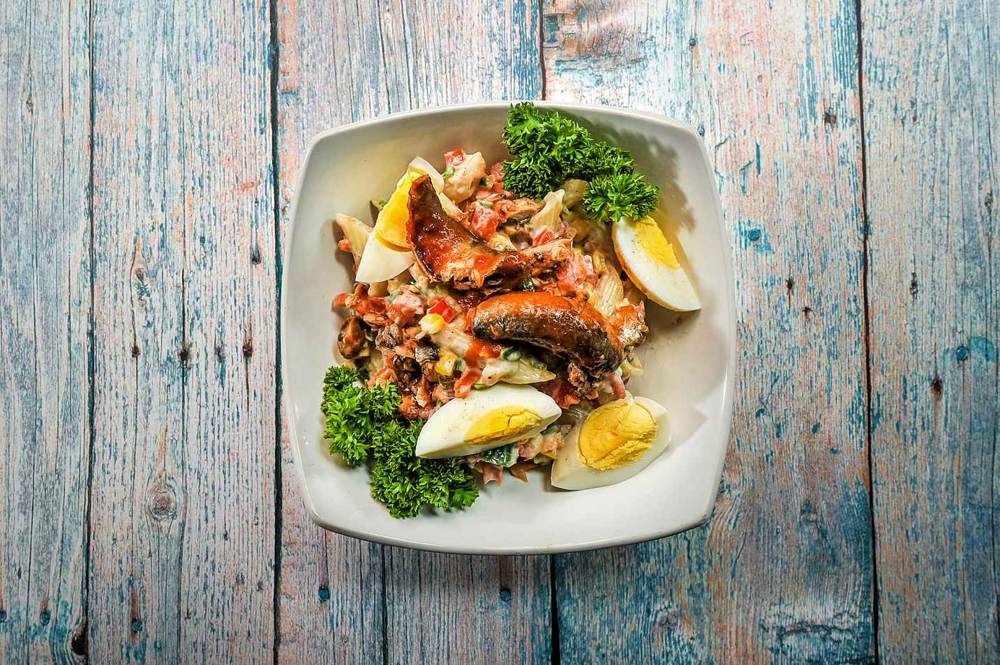
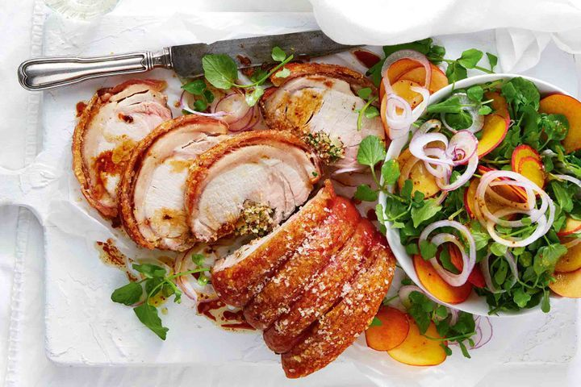

Leo Recipes
The best way to end a great meal is with something sweet.
Leo Recipe basically aims at showcasing recipes about the main dishes (course) from talented chefs globally.

The main course is a much bigger choice because this is your dinner. The appetizer was just a sampling of the food to come. If you order something you don’t like the dinner will be ruined so most people don’t take as many chances here. It usually takes a longer time to prepare and eat a main course because it’s much larger.
The main course is the actual big meal you’ll be eating like a steak, fish or pasta.
Let's Check Out Today's Main Course by (chef Leonard):
Rolled pork loin with peach and watercress salad

DESCRIPTION
The crispy, crunchy crackling and sweetness of peaches takes this roast pork to the next level.
INGREDIENTS
- 40g butter
- 1 brown onion finely chopped
- 1/2 cup white wine
- 2 tbsp wholegrain mustard
- 2kg rolled porl lion
- 1 cup fresh bread crumps
- 2 tbsp finely chopped fresh flat-leaf parsley leaf
- 2 tbsp finely chopped mint leaves
- 2 tbsp rice bran oil
- 1 tbsp sea salt
- 1 bunch watercress sprigs picked
- 4 yellow peaches, stones removed and discarded thinly sliced
- 1/4 red onion thinly sliced
STEPS
- Melt butter in a large frying pan over medium-high heat. Add onion. Cook, stirring, for 5 minutes or until softened. Add wine and mustard. Stir until combined. Cook for 2 minutes or until wine has evaporated. Transfer to a large bowl. Set aside to cool.
- Meanwhile, remove string from pork. Unroll. Pat rind dry with paper towel. Score at 1cm intervals. Place pork, skin-side down, on board. Slice crossways through thickest part of the meat, being careful not to cut the whole way through. Open out to form 1 large piece.
- Add breadcrumbs, parsley and mint to onion mixture. Season with salt and pepper. Stir to combine.
- Preheat oven to 250C/230C fan-forced. Press stuffing over pork. Roll up to enclose. Tie with kitchen string at 3cm intervals to secure. Place on a lightly greased wire rack in a large flameproof roasting pan. Brush with oil and rub sea salt all over pork.
- Roast pork for 20 minutes. Reduce heat to 180C/160C fan-forced. Roast pork for a further 1 hour 30 minutes or until juices run clear when a skewer is inserted into the centre. Transfer pork to a plate. Cover loosely with foil. Set aside for 10 minutes to rest.
-
- Arrange watercress, peach and onion in a serving bowl. Drizzle with dressing. Slice pork and serve with peach salad.